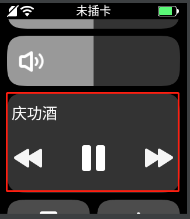
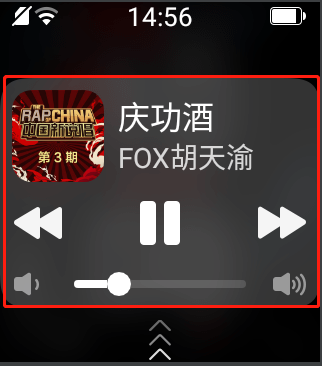

# API开放接口
# 1. 输入法
支持手写、语音、数字、字符。
- 初始化设置
//手写默认：110;语音：111;数字：112;字符113
editText.setInputType(110);
// 获取输入的文本
editText.addTextChangedListener(new TextWatcher() {}
- 代码调起输入法
InputMethodManager imm = (InputMethodManager) getSystemService(Context.INPUT_METHOD_SERVICE);
imm.toggleSoftInput(0, InputMethodManager.HIDE_NOT_ALWAYS);
# 2. 分享功能
# 2.1 分享能力获取
- 找小天才对接人员申请支持分享的AppKey。
- 引入sdk，具体见 2.7 SDK 下载
# 2.2 检测版本是否支持
如果有特殊需求可以先行检测再分享，如果没有则不需要执行，在SDK中针对版本不支持的情况会默认弹一个Toast,提示当前版本不支持分享到XX。
//查询是否支持分享到微聊
boolean isSupport = new ShareMessageManager(context).checkBaseVersion(Scene.TYPE_CHAT);
//查询是否支持分享到好友圈
boolean isSupport = new ShareMessageManager(context).checkBaseVersion(Scene.TYPE_MOMENT);
# 2.3 分享指定内容类型
- 分享文本类型
//第一步：创建XTCTextObject对象，并设置text属性为要分享的文本内容
XTCTextObject xtcTextObject = new XTCTextObject();
xtcTextObject.setText("来自测试程序的分享");
//第二步：创建XTCShareMessage对象，并将shareObject属性设置为xtcTextObject对象
XTCShareMessage xtcShareMessage = new XTCShareMessage();
xtcShareMessage.setShareObject(xtcTextObject);
//第三步：创建SendMessageToXTC.Request对象，并设置
SendMessageToXTC.Request request = new SendMessageToXTC.Request();
request.setMessage(xtcShareMessage);
//第四步：创建ShareMessageManagr对象，调用sendRequestToXTC方法，传入SendMessageToXTC.Request对象和AppKey
new ShareMessageManager(this).sendRequestToXTC(request, "appkey");
- 分享图片类型
//第一步：创建XTCImageObject 对象，并设置bitmap属性为要分享的图片
XTCImageObject xtcImageObject = new XTCImageObject();
xtcImageObject.setBitmap(BitmapFactory.decodeResource(getResources(), R.mipmap.img_show));
//如果图片在公共目录，可以直接设置图片路径即可
xtcImageObject.setImagePath(“filePath”);
//第二步：创建XTCShareMessage对象，并将shareObject属性设置为xtcTextObject对象
XTCShareMessage xtcShareMessage = new XTCShareMessage();
xtcShareMessage.setShareObject(xtcImageObject);
//第三步：创建SendMessageToXTC.Request对象，并设置message属性为xtcShareMessage
SendMessageToXTC.Request request = new SendMessageToXTC.Request();
request.setMessage(xtcShareMessage);
request.setFlag(1);//设置跳转参数，设置为1为分享成功停留到微聊或者好友圈，设置为0或者不设置分享成功会返回原分享界面
//第四步：创建ShareMessageManagr对象，调用sendRequestToXTC方法，传入SendMessageToXTC.Request对象和AppKey
new ShareMessageManager(this).sendRequestToXTC(request, "appKey");
- 分享程序类型（图文类型）
//第一步：创建XTCAppExtendObject对象
XTCAppExtendObject xtcAppExtendObject = new XTCAppExtendObject();
//设置点击分享的内容启动的页面
xtcAppExtendObject.setStartActivity(MainActivity.class.getName());
//设置分享的扩展信息，点击分享的内容会将该扩展信息带入跳转的页面
xtcAppExtendObject.setExtInfo("ExtendInfo");
//第二步：创建XTCShareMessage对象，并将shareObject属性设置为xtcTextObject对象
XTCShareMessage xtcShareMessage = new XTCShareMessage();
xtcShareMessage.setShareObject(xtcAppExtendObject);
//设置图片
xtcShareMessage.setThumbImage(BitmapFactory.decodeResource(getResources(), R.mipmap.img_app));
//设置文本
xtcShareMessage.setDescription("这是一条图文分享信息");
//第三步：创建SendMessageToXTC.Request对象，并设置message属性为xtcShareMessage
SendMessageToXTC.Request request = new SendMessageToXTC.Request();
request.setMessage(xtcShareMessage);
request.setFlag(1);//设置跳转参数，设置为1为分享成功停留到微聊或者好友圈，设置为0或者不设置分享成功会返回原分享界面
//第四步：创建ShareMessageManagr对象，调用sendRequestToXTC方法，传入SendMessageToXTC.Request对象和AppKey
new ShareMessageManager(this).sendRequestToXTC(request, "appKey");
# 2.4 分享回调
//第一步：在点击分享的页面实现IResponseCallback接口
public class MainActivity extends Activity implements IResponseCallback{...}
//第二步：在onCreate、onNewIntent方法中处理回调
private IXTCCallback xtcCallback;
protected void onCreate(Bundle savedInstanceState) {
super.onCreate(savedInstanceState);
setContentView(R.layout.activity_main);
//处理回调
xtcCallback = new XTCCallbackImpl();
xtcCallback.handleIntent(getIntent(), this);
}
protected void onNewIntent(Intent intent) {
super.onNewIntent(intent);
setIntent(intent);
//处理回调
xtcCallback.handleIntent(intent, this);
}
//第三步：实现onResp和onReq方法
public void onResp(boolean isSuccess, BaseResponse response) {
//to-do
}
public void onReq(ShowMessageFromXTC.Request request) {
//to-do
}
- onResp方法
该方法是用于点击分享之后，分享结果信息的回调。
| 字段 | 说明 |
|---|---|
| isSuccess | 是否分享成功 |
| response.getCode() | 回调状态码，具体可以通过BaseResponse.Code进行判断 |
| response.getErrorDesc() | 状态码的描述 |
| response.getConversationId() | 分享的会话ID，好友圈为-1，其是将微聊的会话ID进行加密后返回的 |
| response.getTransaction() | 标识唯一分享 |
- onReq方法
该方法是用于在微聊或好友圈点击分享的程序信息后会跳转到指定页面的回调。
| 字段 | 说明 |
|---|---|
| request.getExtInfo() | XTCAppExtendObject对象设置的extInfo属性 |
| request.getScene() | 分享到的场景，scene.getType()判断场景类型，Scene.TYPE_CHAT是微聊，Scene.TYPE_MOMENT是好友圈 |
| request.getTransaction() | 标识唯一分享 |
# 2.5 分享指定渠道
除上述点击分享后调到一个渠道选择页面（如上图）外，还可以跳过渠道选择页面直接分享到指定渠道，详细方法如下：
- 分享到微聊
//第一步：创建场景
Chat chat = new Chat();
//允许显示的会话，如果不设置默认为好友和好友群
chat.setFriendType(Chat.FRIEND|Chat.FRIEND_GROUP);
//需要过滤的好友，传入coversitionId列表（conversitionId来自于onReq方法）
chat.setFilterConversationList(filterConversationList);
//过滤机型
chat.setFilterModeList(filterModeList)
//点击过滤的好友需要Toast的文本内容
chat.setFilterTip(context.getString(R.string.share_error_limit));
//第二步：将场景设置到SendMessageToXTC.Request对象中
SendMessageToXTC.Request request = new SendMessageToXTC.Request();
request.setScene(chat);
- 分享到好友圈
//第一步：创建场景
Moment moment = new Moment();
//第二步：将场景设置到SendMessageToXTC.Request对象中
SendMessageToXTC.Request request = new SendMessageToXTC.Request();
request.setScene(moment );
# 2.6 注意事项
new ShareMessageManager(context)，该 context 必须为 Activity。应用图标尽量使用8位图标，否则压缩之后的图标太大，占用较多服务器资源。
分享和跳转界面，都需要加
exproed = ture标签。如果你的 APP 开启了混淆，请配置一下分享相关的类不混淆，否则会导致分享失败。
-keep class com.xtc.shareapi.**{*;}
# 2.7 SDK下载
请联系小天才获取。
# 3. 步数获取
- 首先，需要在AndroidManifest中声明步数权限：
<uses-permission android:name="com.xtc.motion.permission.READ_MOTION_STATE"/>
由于旧版本没有自定义权限，可直接获取，所以为了适配旧版本，需要先调用一次获取步数的方法（代码示例
getMotionStep()方法，需要try catch，防止崩溃），- 如果未获取到，则去申请步数权限；申请自定义的读取步数的权限代码参考下面的示例。
- 如果能正常获取到步数，就直接用获取到的步数执行处理逻辑。
重写
onRequestPermissionsResult方法用于接收授权结果。调用弹出授权框后，- 如果用户点击同意授权，则
onRequestPermissionsResult会回调到授权成功的结果。可以调用方法获取步数； - 如果用户未同意，
onRequestPermissionsResult会回调到授权失败，这时获取不到步数，需要自己进行处理。
- 如果用户点击同意授权，则
代码示例如下：
//授权相关的CODE
private static final int PERMISSION_CODE = 1000;
//读取步数权限
private static final String READ_MOTION_STATE = "com.xtc.motion.permission.READ_MOTION_STATE";
private static final String[] permissions = new String[]{
READ_MOTION_STATE
};
private void initStepData(){
int step = getMotionStep();
if(step == -1){
//step为-1，代表未获取到步数，需要申请步数权限
ActivityCompat.requestPermissions(this, permissions, PERMISSION_CODE);
} else{
//不为-1则说明已经获取到了步数，执行步数处理逻辑
todo doYourSelfBussiness method
}
}
//Activiity申请权限的回调
@Override
public void onRequestPermissionsResult(int requestCode, @NonNull String[] permissions, @NonNull int[] grantResults) {
if (requestCode == PERMISSION_CODE) {
if (grantResults.length > 0 && grantResults[0] == PackageManager.PERMISSION_GRANTED) {
//同意授权则调用获取步数的方法
getMotionStep();
} else {
//如果用户不同意授权，需要自己做处理
todo doYourSelfDealUserUnauthorized method
}
}
}
//获取运动步数
private int getMotionStep(){
ContentResolver contentResolver = this.getContentResolver();
Uri uri = Uri.parseint("content://com.xtc.motion/step");
Cursor cursor = null;
int step = -1;
try {
cursor = contentResolver.query(uri, null, null,null, null);
if (cursor != null && cursor.moveToNext()) {
step = cursor.getInt(cursor.getColumnIndex("step"));
LogUtil.i(TAG,"getMotionStep :"+step);
}
} catch (Exception e) {
Log.e(TAG,"getMotionStep",e);
} finally {
if (cursor != null) {
cursor.close();
}
}
return step;
}
# 4. Z6 翻盖翻起适配
支持第三方应用监听手表翻盖的状态。
- 初始状态
使用android.os.SystemProperties读取 persist.sys.hall.opened值；true为打开状态
- 实时监听
| 功能 | 最新版本统一后的key值 | Z6老版本key值 | 说明 |
|---|---|---|---|
| 关闭 | 1004 | 287 | Z6 从1.5.5系统版本开始都是统一成1004，Z6之前的版本是287，Z6巅峰版一直都是1004 |
| 打开 | 1003 | 288 | Z6 从1.5.5系统版本开始都是统一成1003，Z6之前的版本是288，Z6巅峰版一直都是1003 |
总之一句话： 第三方的版本，使用
1004和1003来判断即可！
因为Z6手表的1.5.5系统版本已经发布一年多了，后续接入进来的第三方不会发布到该版本之前的版本。
//实时监听
@Override
public boolean onKeyDown(int keyCode, KeyEvent event) {
if(keyCode == 1004){
//关闭
} else if(keyCode == 1003){
//打开
}
return super.onKeyDown(keyCode, event);
}
# 5. 通知栏适配
不管是展讯平台还是高通平台，第三方的都直接 copy 下面的代码稍作修改，然后发通知即可!!
注意事项：系统做了定制化，8.0启动用于启动前台服务的通知栏不会展示出来。
如果是想展示音乐通知栏的话，另外按照下面的音乐通知栏代码生成，别和启动前台服务的通知栏和在一起。意思是：如果你用前台服务播放音乐，然后想展示音乐通知栏，那么就弄两个通知栏，
一个通知栏用于启动前台服务并不会展示，另外一个音乐通知栏展示出来控制音乐播放。
- 展示通知
// 这句话得调用，别漏了
NotificationHelper.createDefaultChannel(getApplicationContext());
NotificationManager manager = (NotificationManager) getApplicationContext().getSystemService(Context.NOTIFICATION_SERVICE);
Notification notification = new NotificationCompat.Builder(getApplicationContext(), NotificationHelper.DEFAULT_CHANNEL_ID)
.setContentTitle("小天才通知Title")
.setContentText("小天才通知Content")
.setTicker("一条新消息")
.setWhen(System.currentTimeMillis())
.setSmallIcon(R.drawable.notification)
.setLargeIcon(BitmapFactory.decodeResource(getResources(), R.drawable.notification))
.build();
manager.notify(1, notification);
- 创建 channel
public class NotificationHelper {
public static final String DEFAULT_CHANNEL_ID = "1024";
public static final String FROEGROUND_SERVICE_CHANNEL_ID = "1025";
/**
* 默认渠道
* @param context
*/
public static void createDefaultChannel(Context context){
if (context != null && android.os.Build.VERSION.SDK_INT >= android.os.Build.VERSION_CODES.O) {
NotificationChannel chan1 = new NotificationChannel(DEFAULT_CHANNEL_ID,"notification", NotificationManager.IMPORTANCE_HIGH);
NotificationManager notificationManager = (NotificationManager) context.getSystemService(
NOTIFICATION_SERVICE);
if(notificationManager != null){
notificationManager.createNotificationChannel(chan1);
}
}
}
}
# 6. 音乐通知栏
为了更好的音乐通知体验,新版本桌面统一了音乐通知的显示,将在表盘下拉和锁屏统一显示
- 快捷显示

- 锁屏显示

第3方需要适配音乐通知 sdk (联系小天才获取sdk和demo)
Note:未适配的音乐类应用,新版本将无法弹出通知
# 集成音乐通知 sdk
播放音乐的时候，支持在音乐控件/通知栏显示当前的信息,以及快捷上一首/下一首/暂停/播放。
- 添加音乐sdk依赖
android {
repositories {
flatDir {
dirs 'libs'
}
}
}
dependencies {
implementation(name: 'xtc_music_notification_1.0.1', ext: 'aar') // xtc_music_notification.aar 文件放入项目 libs/ 目录下
}
- 如果是前台通知,需要先设置前台进程保活(前台通知不会显示)
/* 前台进程保活,这个通知不会显示 */
Notification notification = new Notification.Builder(this).build();
startForeground(FOREGROUND_ID, notification);
- 音乐通知构建
MusicNotification musicNotification = new MusicNotification.Builder()
.context(this)
.layout(R.layout.notification_remote_view)/*在低版本上显示的通知的 layout 文件id ,为了兼容D3机型,根布局使用 RelativeLayout*/
.tvSongName(R.id.tv_song_name,/* 通知中的 "歌曲名" 控件id, 必须是一个 TextView */
PendingIntent.getBroadcast(this, REQUEST_CODE_SKIP_TO_SPLASH,
new Intent(this, NotificationMusicReceiver.class).setAction(ACTION_NOTIFICATION_START_APP),
PendingIntent.FLAG_UPDATE_CURRENT))/*点击歌曲名称,触发 Intent*/
.ivPrevious(R.id.iv_previous, /* 通知中的 "上一曲" 控件id, 必须是一个 ImageView */
PendingIntent.getBroadcast(this, REQUEST_CODE_PREVIOUS,
new Intent(this, NotificationMusicReceiver.class).setAction(ACTION_NOTIFICATION_PREVIOUS)
, PendingIntent.FLAG_UPDATE_CURRENT))/*点击 "上一曲",触发 Intent*/
.ivNext(R.id.iv_next, /* 通知中的 "下一曲" 控件id, 必须是一个 ImageView */
PendingIntent.getBroadcast(this, REQUEST_CODE_NEXT,
new Intent(this, NotificationMusicReceiver.class).setAction(ACTION_NOTIFICATION_NEXT)
, PendingIntent.FLAG_UPDATE_CURRENT))/* 点击 "下一曲",触发 Intent */
.playPause(R.id.iv_play_pause, /* 通知中的 "播放/暂停" 控件id, 必须是一个 ImageView */
PendingIntent.getBroadcast(this, REQUEST_CODE_PLAY_PAUSE,
new Intent(this, NotificationMusicReceiver.class).setAction(ACTION_NOTIFICATION_PLAY_PAUSE)
, PendingIntent.FLAG_UPDATE_CURRENT))/* 点击 "播放/暂停", 触发 Intent */
.playPauseRes(R.drawable.selector_action_pause_song, R.drawable.selector_action_play_song)/* "播放/暂停"状态 显示的资源 id */
.tvSinger(R.id.tv_singer_name)/* 通知中的 "歌手名" 控件id, 必须是一个 TextView , 可以没有 */
.contentIntent(PendingIntent.getActivity(this, 1,
new Intent(this, MainActivity.class), PendingIntent.FLAG_UPDATE_CURRENT))/* 点击通知触发 */
.build();
// 1.0.1
RemoteViews remoteMusicViews = result.getRemoteMusicViews();/*如果要有其他的显示,也可以直接用 RemoteViews 的 API*/
remoteMusicViews.setOnClickPendingIntent(R.id.tv_close,PendingIntent.getBroadcast(
this,2,new Intent(this, NotificationMusicReceiver.class).setAction(ACTION_CANCEL_NOTIFICATION),
PendingIntent.FLAG_CANCEL_CURRENT));/* 取消的按钮,音乐通知规范要求要有这个*/
- 音乐通知发送与更新
// 播放时 的显示
musicNotification.showSongName(songName)/*歌曲名*/
.showSinger(singer)/*歌手*/
.showAlbumCover(albumCoverUrl)/*新版本的锁屏支持,显示专辑图片,这里传入图片的 url*/
.showPlay()/*当前为播放状态*/
.send();/*发送通知*/
// 暂停时 的显示
musicNotification.showPause().send();/*显示暂停的音乐通知,为了配合系统进程策略,避免异常,如果之后 5min 没有调用 showPlay(),会自动取消通知显示*/
// 取消音乐通知
musicNotification.cancel();/*取消音乐通知*/
# 适配后的自测
| 手表机型\桌面版本 | 安装Launcher_old.apk | 安装launcher_new.apk |
|---|---|---|
| Z3/Z5/Z6/Z6巅峰版/Z7任选一种 | 1. 通知栏显示音乐通知,点击音乐控制按钮,功能正常 | 1.通知栏不显示音乐通知 2.表盘界面下拉,显示音乐控件,点击音乐控制按钮,功能正常 3.不插电状态下,音乐播放过程中,锁屏显示音乐通知 |
| D3 | 同上↑ | 暂无需验证 |
# 6.Webview网页功能
提供支持在手表上打开Web网页的功能和web网页与手表交互一些的能力。
# 7.相机拍照，相册获取图片功能
# 8.demo下载
请联系小天才获取。
# 9. 待支持功能
- 推送
- 定位
- 小视频录制
- 做活动消耗积分